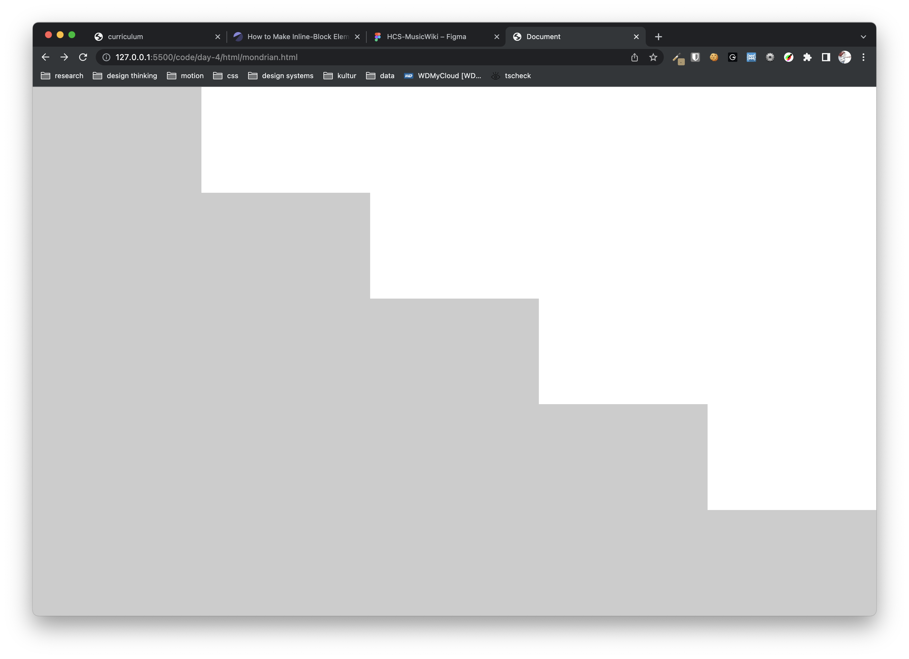

# Day 1 ## Play --- * intro * the tree and the martian * some slides * codepen: first editor steps --- ## Task Design a business card. Use a DIV as a CONTAINER 
# Day 2 ## Rules --- * check-in * recap-task * where to put my css: inline, head, file * css-reset and comments * order of declaration * Specificity: the basics * IDs & classes * Taking aim: selectors --- ## recap-task Create a simple helloworld.html that say "Hello World", with an external css file called styles.css. Organize your files in a folder like this:  use "../folder/filename.ext" to link your css to your html --- ## Task Create a simple vertical navigation with a highlight state  --- ## Task Create a page displaying a recipe 
# Day 3 ## Display --- * show&tell homework * WarmUp: loooongest selector * local server: Live Server * page flow * display types * the box model --- ## Task Create a blackout poem using only DIVs --- ## Units Research units and display 5 squares using px, %, rem, em, vw/vh - how are they different? 
# Day 4 ## Units, Position and more Selectors --- * recap pageflow and box model * Units, relative & absolute * task: sawtooth * positioning * task: sawtooth, inversed * revisit: selectors * pseudo classes * CSS Diner --- ## Task use DIVs and vh/vw units to create a sawtooth with 5 steps  --- ## Task flip the sawtooth using position:relative
# Day 5 ## putting it all together: building base layouts --- * coding principles * reprise: recipe * first look: the inspector * better semantics: html 5 tags * task: base layout for social media * task/homework: build a search result --- ## Task build a wireframed base layout for a simple social media feed --- ## Task create a search result page <img src="img/searchresult.png" alt="" height="300px">
# Day 6 ## the flexbox --- * homework * html tag categories * putting elements next to each other * tagging example - display: inline-block * navigation example - display: flex * Icons via CDN * flex-box froggy --- ## Task Create a page saying "Hello Mars" centered in the viewport. Use as little code as possible. <img src="img/warmup.png" alt="breakpoint" />
# Day 7 ## Using flexbox / targetting devices --- * recap flexbox * task: build a modal dialogue * targetting devices: media queries * inspector: mobile view * homework --- ## Task create these two base layouts again using flex-box and overflow --- ## Task Create a two column layout using flex-box. Use a mobile breakpoint to change the columns to rows. --- ## Task Creating a tooltip using the :hover pseudo-class <img src="img/tooltip.png" />
# Day 8 ## behaviour --- * tables * css variables * task: timetable * power of :hover * css transitions * Forms - sending data --- ## Task create a timetable like this: --- ## Task Create an order form for ice-cream. Use https://jkorpela.fi/cgi-bin/echo.cgi as your form method. Switch between POST and GET
# Day 9 ## bits --- * debugging CSS * CSS Preprocessors * Quick look (if time allows): CSS Grid --- ## Task
Day 9+
A better way to write CSS: CSS Preprocessors
CSS Grid
SASS/SCSS
debugging CSS
svg & DOM
Task: create a set of Buttons
Use @mixin in SCSS to declare common properties